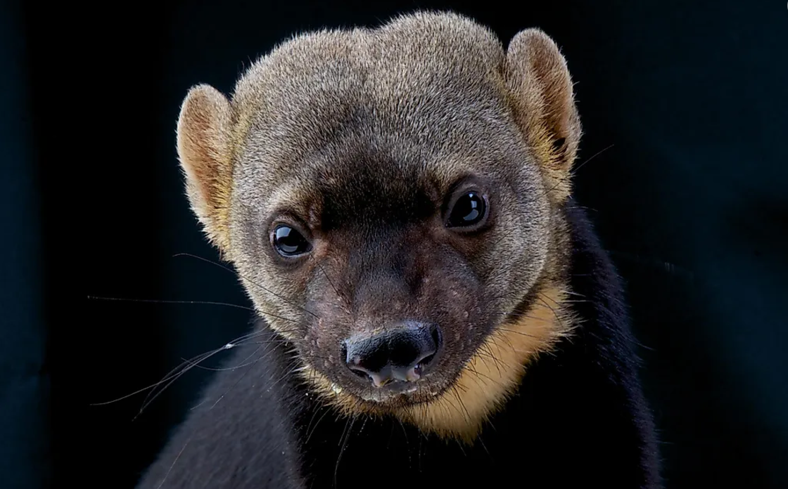
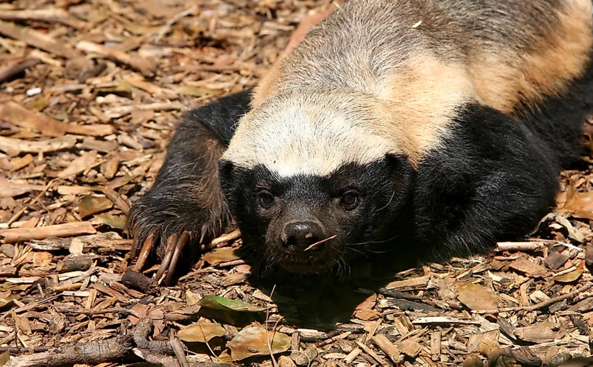
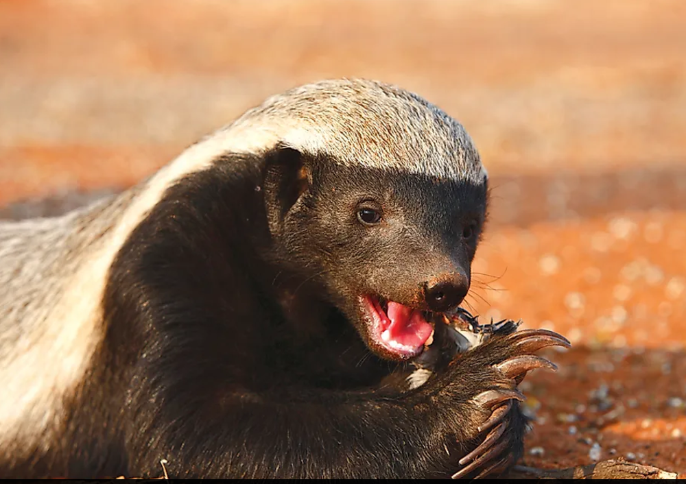

Wildlife Animals

Wildlife refers to undomesticated animal species that thrive in various habitats across the world, from dense forests to arid deserts. These animals play a vital role in maintaining ecological balance. For instance, elephants, which are found primarily in Africa and Asia, are known as keystone species because they help maintain the structure of their ecosystems by shaping the landscape and making water holes that benefit other animals.
Birds such as eagles and hawks are magnificent predators that keep the populations of small mammals and insects in check. Meanwhile, the diverse world of marine wildlife features dolphins and whales, intelligent creatures that captivate researchers with their complex behaviors and communication skills. Each animal, big or small, contributes uniquely to its environment, emphasizing the importance of preserving natural habitats to support biodiversity.
True Facts About The Legendary Honey Badger

The Honey Badger managed to qualify as the world's most fearless animal in the Guinness Book of World Records. So which parts of their reputation are factual, and which are a legend?
Honey Badger Populations Are In Dramatic Decline
Honey Badgers have already disappeared from the North West, Gauteng, Mpumalanga, Kwazulu-Natal, and Cape provinces in South Africa. Considering the skyrocketing growth of the African continent's population, there will not be enough land left to house the Badgers conflict-free. They have substantial individual areas, and low reproductive rates (typically one new Badger per birthing) mean the population is quite fragile.
Their daring persistence led to a conflict with one enemy they cannot outwit: humans. Wires, fences, and sheds cannot keep a dedicated Honey Badger away. So they are commonly killed in a trap or poisoned by commercial beekeepers and farmers. They also suffer through indiscriminate poisoning and trapping for jackal and caracal.
Go For The Testicles Tactic? We Are Not Convinced
This is one of the most widespread "interesting facts" about Honey Badgers. It does sound like one of the internet make-believes, so we did some investigating. We were unable to find any tangible evidence of the repeatedly used "go for the manhood" tactics on prey or humans. So we remain skeptical that Honey Badgers deliberately target the reproductive parts.
More likely, it is a generalization from an accidental situation: Honey Badgers have been seen challenging very large animals like buffalos and rhinos if they approached their den or young. When an enemy is so huge, they will bite indiscriminately, whatever they can reach. Still, the persistence of this anecdote shows that Honey Badgers make a strong impression!
Never-Aging Spirit
Stoffel is an 18-year-old relatively friendly Honey Badger who became a star of a movie, documenting his handler's failures to contain the elderly Badger. After one of his escapes, he was mauled by lions. As soon as he got out of the hospital, he once again escaped his enclosure. When humans double-locked the gate, Stoffel climbed a tree and jumped over the fence to raid the kitchens (attempting to chew on an eagle along the way).
When they removed the trees, Stoffel dug up a few rocks, rolled them into a pile at one corner of his enclosure, and used it as a ladder. In response, his handlers removed everything from the enclosure except the dirt under his feet. After some observation, Stoffel rolled the dirt into a ball, hopped the fence again, and then broke into his handlers' house to explore their food stock. Stoffel is not an exceptionally smart example of a Honey Badger; he is pretty typical.
Honey Badgers Are Incredibly Intelligent: They Can Use Tools And Cooperative Strategies
For its size, the Honey Badger has an enormous brain. They can undo locks, unwrap wires, and climb out of enclosures. They are one of only a few creatures on Earth known to use a variety of tools, not only one or two discovered by accident. Wild Honey Badgers roll large logs around to climb trees or fences. They have been seen to purposely search for a tool to use and innovate on the go, which is remarkable. In captivity, Honey Badgers carefully observe their enclosure looking for a way out. There are validated (recorded on video) examples of opening gates that have been bolted shut.
Famous Stoffel even used teamwork to bypass security measures. When handlers locked him in a cage built to contain him, he escaped by convincing a female Honey Badger to cooperate to open the gate. They even coordinated their efforts. We watched the video twice because it looks unrealistic, yet appears to be the truth!
Evolutionary Smart

But why would a Honey Badger choose such a dangerous diet and not avoid venomous snakes, like more sensible mammals? Snakes are a great source of meat with very little competition for them. Plus, they are relatively slow and not overly cautious prey with just one "dangerous end" instead of a full set of teeth, claws, or hooves.
Venom is still a formidable weapon: there are more than 100 proteins that affect various vital mechanisms in the body of the bitten animal. Honey Badgers do not have protection against all of them. Instead, similar to mongoose, their defense is mainly focused on alpha-neurotoxins that paralyze the muscles used for breathing. So even if a Badger gets knocked out (which happens and has been recorded), they, at least, do not asphyxiate in their sleep.
Honey Badger Quote
"Honey badgers don’t give up; they give 100%."
This quote emphasizes the Honey Badger’s relentless nature and serves as a reminder to always give our best effort, no matter the circumstances. It encourages us to stay committed to our goals and push through challenges, even when the odds seem stacked against us.
"Be fearless in the pursuit of what sets your soul on fire, just like a honey badger chasing its prey."
This quote reminds us to follow our passions and dreams without fear or hesitation. Like the honey badger, we should be fiercely determined in our pursuit of happiness and fulfillment.
To be continued... Compiled by: NascoTechCopyright: 2024